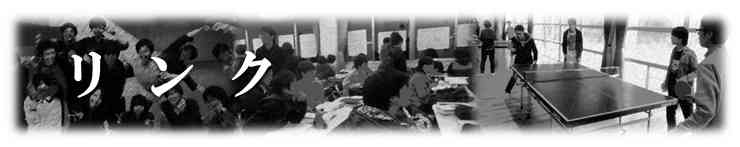
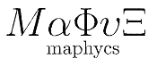
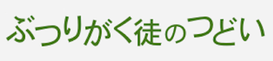

自主セミナー
|
|
|
 |
|
都内数学科学生集合 ★ 数学が好きな学生などが集まり、セミナーを中心に活動。定期的に行われる総会で会員が発表。合宿などで他のゼミの人との交流を深める機会も。院生や社会人の参加もあり。 |
中津川自主セミナー ★ 名大理学部の学部生を中心に年二回セミナー合宿を開催。学ぶ分野を参加者で相談して決定し、興味の在る分野をメンバーと議論しながら学ぶ。院生・OBらによる持ちネタセミナーも実施。名大生以外の参加もあり。 |
数物交流会 maphycs ★ 慶応大の非公認サークル。講演会や交流会を企画して交流の場を設けたり、ゼミの斡旋を行うことで学生の学びを支えることを目的としている。 |
|
|
|
|
|
兵庫県立大自主ゼミ会 ★ 兵庫県立大学の自主ゼミサークル。主に物理や生物、化学の分野の自主ゼミや勉強会を統一的に運営、斡旋している。また自主ゼミ間の交流会，情報交換会なども企画している。 |
|
|
イベント
|
|
|
 |
|
サマーチャレンジ ★ 基礎科学を担う若手を育てることを目的に、大学３年生を主な対象としてスクールを開催。最前線で活躍する研究者による講義や、素粒子・原子核コースと物質生命コースに分かれた実習プログラムにより、研究の一連の流れを体験できる。 |
物理チャレンジ 物理チャレンジは、20歳未満で大学などの高等教育機関に入学する前の青少年を対象とした全国規模の物理コンテスト。「高校物理」を履修していなくても挑戦することができて、物理の楽しさ面白さに触れられるのが魅力。 |
ぶつりがく徒のつどい ★ ぶつりがく徒のつどいは、その名の通り「物理に興味・関心がある人たちで集まって何かをしよう」という企画です。大学生を中心に、院生や高校生、社会人の方や研究者の方が集まって勉強しながらわいわいする会を開きます。 |
サークル
|
|
||
|
数学の輪 ★ 「数学についての同人誌」である冊子『数学の輪』の製作を目的として、第9回数物セミナー合同合宿参加者の有志で発足した数学サークル。 |
学会
大学・研究施設
岡山大学 理学部物理学科 ★
高エネルギー加速器研究機構
早稲田大学 理工学術院 先進理工学部 物理学科・応用物理学科 ★
研修施設
閑谷学校
オリンピック記念青少年総合センター
中津川研修センター
吉備青少年自然の家
川渡共同セミナーセンター
曾爾青少年自然の家
WEBツール
Skype
数物セミナーお絵描きチャット（提供元：無料レンタル タカミンお絵描きチャット）
★：相互リンク
※各サイトの説明文は主にリンク先から引用しています。
※当サイトは基本的にリンクフリーです。相互リンク依頼は「お問合せフォーム」からどうぞ。